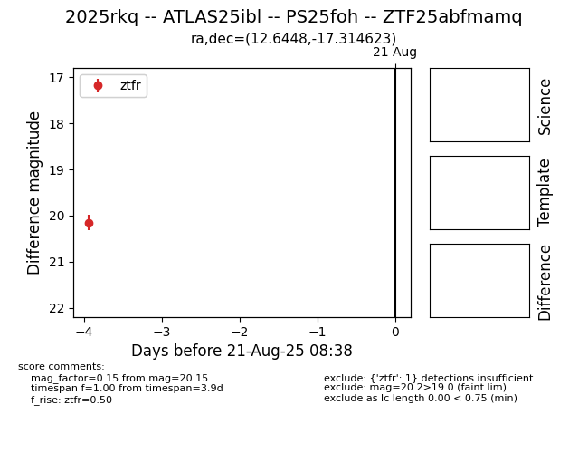

Target 2025rkq at 2025-08-21 10:11, see:
FINK: fink-portal.org/ZTF25abfmamq
Lasair: lasair-ztf.lsst.ac.uk/objects/ZTF25abfmamq
ALeRCE: alerce.online/object/ZTF25abfmamq
TNS: wis-tns.org/object/2025rkq
YSE: ziggy.ucolick.org/yse/transient_detail/2025rkq
alt names
ZTF25abfmamq (ztf,alerce)
2025rkq (tns,yse)
ATLAS25ibl (atlas)
PS25foh (panstarrs)
coordinates:
equatorial (ra, dec) = (12.6448,-17.31462)
galactic (l, b) = (121.7294,-80.18437)
photometry
last ztfr=20.15
1 ztfr detections
